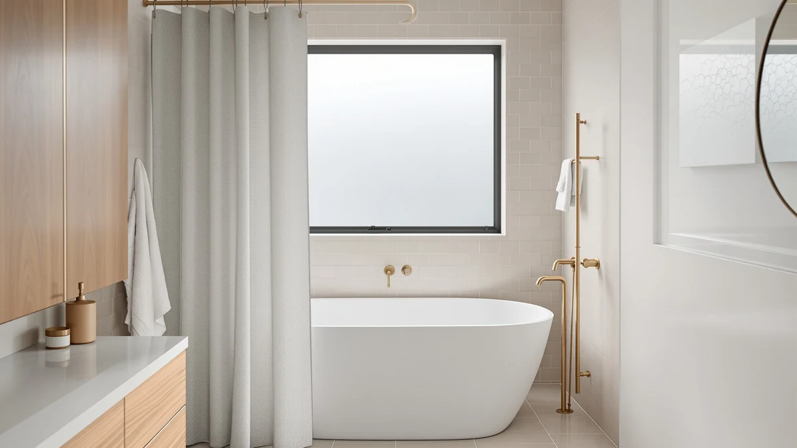

Quick Answer
The RiverDream Heavyweight Waffle No Hook is a new black waffle-weave curtain with zero verified ratings on Amazon as of publishing, so we compared its split-ring hardware and clear top window against three shower curtain and hardware alternatives instead of relying on owner feedback that doesn't exist yet. If a proven track record matters more to you than being an early adopter, the BOODII No Hook Shower Curtain below already carries 2,673 verified reviews at a 4.8-star average. If you want the newest no-hook waffle design at $32.99 and don't mind being among the first buyers, the RiverDream is worth a look.
Our pick: RiverDream Heavyweight Waffle No Hook — $32.99 Check Price on Amazon
Bottom line: our top pick is the RiverDream Heavyweight Waffle No Hook Shower Curtain with at $32.99.
Things to Know Before You Buy
- This exact listing has no owner reviews yet. Amazon shows zero ratings and zero reviews for this ASIN, since Amazon added it to the catalog on August 9, 2026. Everything about durability in this guide comes from the listing and from comparable curtains, not from feedback on this specific unit.
- Split rings replace hooks, not the rod. The curtain hangs on a standard shower curtain rod using rings sewn into the top hem, the same hookless mechanic used by several proven competitors.
- A clear window sits near the top of the panel. It lets light through without exposing anything below shoulder height, a detail covered in more depth in our shower curtains with a window guide.
- Standard size, black only. At 71 by 74 inches it fits most tubs and shower stalls, but the listing offers a single black colorway with no pattern or lighter color options.
If you typed riverdream heavyweight waffle no review into a search bar, you landed in the right place: this exact listing has collected zero ratings and zero reviews since Amazon added it to the catalog on August 9, 2026. The curtain ships in black with a waffle-weave texture, split rings sewn into the top hem, and a clear window strip that lets light through near the top of the panel, all for $32.99.
We can't cite owner feedback that hasn't been written yet, so this guide works from what the listing documents directly: the stated material, the 71 by 74 inch size, the included snap-in liner, and how those specs compare with three other picks in this space, including one no-hook curtain with an established review history and a stainless steel tension rod for buyers who need hardware rather than fabric. Split-ring, no-hook mechanics aren't new, and curtains built the same way have earned thousands of reviews elsewhere, so if a track record matters more to you than novelty, we point you toward the pick that already has one.
Why You Should Trust Us
I'm Ilane Tall, and I cover bath and shower gear for Best Shower Curtains. For this piece, I pulled the current Amazon listing for the RiverDream Heavyweight Waffle No Hook, checked its price and materials against three other shower curtain and rod listings, and weighed review counts rather than star ratings alone, since a rating built on zero reviews carries no statistical weight.
We don't own or install every product we cover, and we won't invent a testing story for a curtain that hasn't been rated yet. Instead we compare verified specs, published materials, and owner feedback on comparable products, and we say so plainly when a pick, like this one, still has no review history behind it.
Our Research Experience
We haven't hung this specific RiverDream Heavyweight Waffle No Hook curtain in a real shower, and with zero verified reviews on the listing, no one else has published a usable account of it either. Our approach here is comparative: we researched the manufacturer's stated materials and dimensions, checked how the split-ring hardware and clear top window compare with the mechanically similar hookless curtains we've covered elsewhere on this site, and weighed the $32.99 price against what a proven competitor already delivers.
Owners of the BOODII No Hook Shower Curtain, the one alternative below with a real review history, consistently report that its built-in liner holds up through repeated washes and that the eucalyptus print resists fading. Since the RiverDream uses a similar no-hook, snap-in category of hardware, that owner history is the closest proxy we have until real feedback appears on this specific listing.
Overview & Specs

RiverDream Heavyweight Waffle No Hook
What we like
- Split rings sewn into the top hem mean no separate hooks or rings to buy, and no need to remove your existing rod
- Clear window strip near the top lets ambient light through while keeping the lower panel opaque for privacy
- Waffle-weave texture and an included snap-in liner add visual depth that a flat vinyl curtain doesn't offer
- Standard 71 by 74 inch size fits most tubs and shower stalls without trimming
Flaws but not dealbreakers
- Zero verified ratings or reviews at the time of publishing, so there's no owner track record to check
- Ships in black only, which won't suit a bathroom built around lighter or patterned decor
- Costs roughly the same as the BOODII No Hook Shower Curtain, which uses similar hardware and already has 2,673 reviews behind it
| Material | Polyester / PEVA |
| Size | 71"W x 74"L (Pack of 1) |
The RiverDream Heavyweight Waffle No Hook works around the same idea as most modern no-hook curtains: split rings sewn directly into the top hem clip onto a standard shower rod without threading individual plastic rings through grommets. The listing calls out a clear window along the top of the panel, a detail meant to let light in near the ceiling line while the waffle-weave body below stays opaque enough for privacy.
It's built from a polyester and PEVA blend in black, sized at 71 inches wide by 74 inches long, the same footprint used by most standard tubs and shower stalls, with a snap-in liner sized 70 by 54 inches included in the box. That combination lines up with what established no-hook curtains already do well according to their review histories elsewhere. This riverdream heavyweight waffle no review comparison can't confirm whether this particular execution holds up the same way, since the listing went live on August 9, 2026, with no reviews posted since.
What We Liked
The hardware is the strongest part of this listing. Split rings sewn into the hem match the same no-hook mechanic used by several proven curtains in our guide to the best hookless shower curtains, which suggests the underlying approach is sound even if this specific execution remains unproven.
We also like the clear window strip. It's a small touch, but it lets a windowless bathroom feel less closed in without exposing anything below shoulder height, and it's not something every waffle-weave curtain in this price range includes.
At $32.99, the price sits in line with comparable no-hook curtains, including a nearly identical listing from Conbo Mio at the same price point, so you're not paying a premium for the black colorway or the extra window detail.
What Could Be Better
The obvious gap is review history. Zero ratings and zero reviews means we can't confirm whether the stitching around the split rings holds up the way it does on curtains with a longer track record, or whether the waffle texture flattens after repeated washing and drying.
It also isn't the only option at this price with no reviews yet. The Conbo Mio No Hook Shower curtain, listed a month later at the identical $32.99 price, carries the same zero review count, so neither listing gives you a proven alternative if you're comparing within this exact price bracket.
Black is the only color on this listing. If your bathroom is built around lighter tile or a brighter color scheme, a black waffle-weave panel is a bigger visual commitment than a white or patterned option.
Who Is It For?
This curtain fits buyers who specifically want a black, no-hook waffle-weave design and are comfortable being among the first to report back on it. It also suits anyone who already trusts the split-ring, no-hook mechanic from other curtains and wants a darker colorway than what's typically available in this style.
It's not the pick for buyers who want proof before they spend money. A four-figure review count should matter to a cautious shopper, and the BOODII No Hook Shower Curtain below covers a similar no-hook, snap-in-liner use case with 2,673 reviews already attached to it.
Alternatives to Consider
Because the RiverDream Heavyweight Waffle No Hook has no review history of its own, it's worth placing it next to three other listings in this space. Two of them also carry zero reviews as of publishing, and one is a curtain rod rather than a curtain, so read the notes on each before you decide which one solves your actual problem.

Editor's Pick
Conbo Mio No Hook Shower
A near-identical no-hook curtain at the same $32.99 price, with flex-on rings and a removable snap-in liner instead of split rings sewn into the hem. It carries zero verified reviews of its own, so this is a choice between two unproven listings rather than a safer alternative, but the check-white pattern is a lighter option than the RiverDream's black colorway.
$32.99
Check Price on Amazon
Best Value
BOODII No Hook Shower Curtain
The one pick here with an actual track record: 2,673 verified reviews at a 4.8-star average. It uses a built-in snap-in liner and a eucalyptus botanical print rather than a plain waffle weave, runs a touch smaller at 72 by 72 inches, and costs slightly less at $32.28.
$32.28
Check Price on Amazon
Premium Choice
BRIOFOX Tension Curtain Rod 43-73
A stainless steel tension rod rated for up to 30 pounds and built to resist corrosion, worth adding to your cart if your bathroom doesn't already have a rod installed for either curtain above. It's hardware rather than fabric, so pair it with one of the two picks above it, and it carries zero reviews of its own so far.
$31.99
Check Price on AmazonFrequently Asked Questions
Does the RiverDream Heavyweight Waffle No Hook shower curtain have any reviews yet?
No. As of publishing, the listing shows zero ratings and zero reviews. Amazon added it to the catalog on August 9, 2026, which makes it too new for the review system to have generated meaningful feedback. We based this comparison on the listing's stated specs and on how similar split-ring, no-hook hardware performs on curtains with a longer track record, like the picks in our guide to the best hookless shower curtains.
What size shower does the RiverDream Heavyweight Waffle fit?
It measures 71 inches wide by 74 inches long, with a usable size matching a standard 71 by 72 inch curtain and an included snap-in liner sized 70 by 54 inches. That fits most bathtubs and shower stalls without trimming or adjustment. If you need hardware to match, our guide to shower curtain rods covers options for narrower spaces.
Which of these alternatives actually has a proven review history?
Only one. The BOODII No Hook Shower Curtain carries 2,673 verified reviews at a 4.8-star average. The Conbo Mio No Hook Shower curtain and the BRIOFOX tension rod both show zero reviews as of publishing, the same as the RiverDream pick itself, so BOODII is the only option in this comparison with real owner feedback behind it.
Final Verdict
Search riverdream heavyweight waffle no review again in a few months and this listing may well have real ratings attached to it, but today it doesn't, and that absence is the whole story here. The River Dream curtain brings a clear window and a black waffle-weave finish to a no-hook design that already works well elsewhere, and at $32.99 it isn't overpriced for what it includes. Still, proven performance matters more than being first for most shoppers, and the BOODII No Hook Shower Curtain delivers a similar no-hook, snap-in-liner experience with 2,673 reviews behind it, a track record worth considering before you commit to an unproven listing.